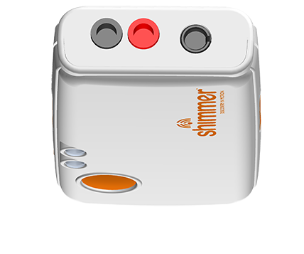

Shimmer3R GSR+ PPG Demo
This app lets you visualize your heart rate signal using a PPG sensor (Shimmer3R GSR+).
- Scan & connect: Tap 🔍 Scan and 🔗 Connect to your BLE device.
- Start streaming: Tap 📡 Start Streaming to view real-time PPG data.
- Watch: Enjoy the YouTube video while monitoring your signal.
- Live chart: See the PPG waveform updating live below the video.
Requirements:
- Device: Shimmer3R GSR+
- Firmware: Version ≥
v1.0.22
